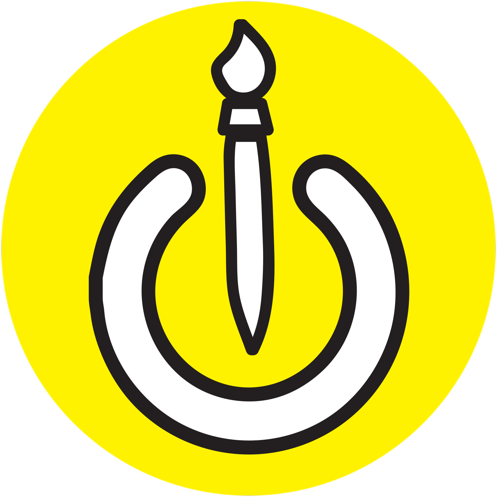

Nos musées préférés
sur l'art asiatique !
Musée Guimet
Palace Museum Beijing
National Museum of China
National Palace Museum Taipei
Victoria and Albert Museum UK
Tokyo National Museum
The MET
British Museum
Freer Gallery of Art Washington
Museum of Oriental Art Turin
Museo Nazionale d'Arte Orientale Tucci Rome
Asian Art Museum San Francisco
Musée des Confluences
Musée d'ethnographie de Bordeaux
Musée des Arts Asiatiques de Nice
Et quelques ressources sur le sujet :
Culture Chinoise
Colloque au collège de France
L’art Khmer, livre de Madeleine Giteau, Danielle Guéret, Thomas Renaut
Art of Asia Khan Academy
Comprendre la porcelaine asiatique
S'initier à l'art asiatique